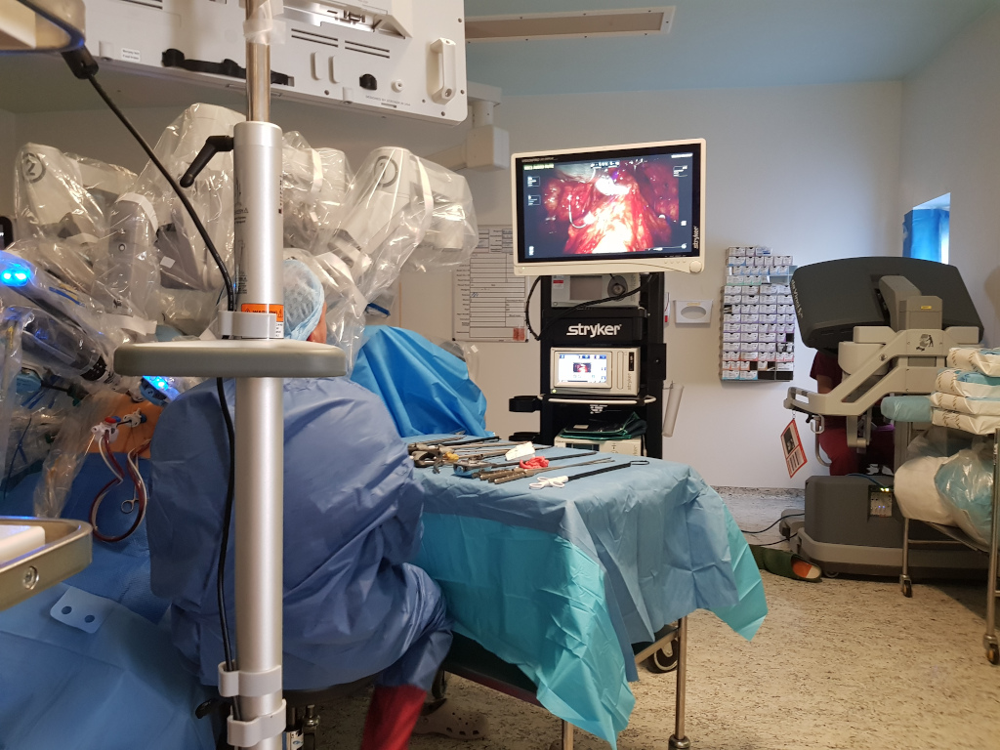

Design Impact in MedTech

Executive Summary
This study is user-centred and explores human's experience in the field of Human-Robot-Interaction in the case study of surgeons performing robotic-assisted surgery using the da Vinci robotic system by Intuitive Inc. Concluding with the significant impact the robot's design has on the user's experience and the adoption of this medical technology, transforming the field and the way these surgeons are practising medicine as a result.
Background
Design is everywhere. But perhaps one area I believe a good design is ever more pronounced is with medical technology. Where good design is not only a matter of appearance, rather it's a matter of improving valuable resources and saving peoples' lives; practitioners and patients alike.
In this study, I saw the incredible impact of User Experience Design (UXD) in medical technology, and how it influences surgeons experience, motivations and the way they practice medicine. This research was conducted in 2019 as my MSc thesis in Digital Anthropology at University College London (UCL), awarding me with a Merit degree.
Challenges
- Finding participants - surgeon are notoriously among the busiest people to track down.
- Negotiating time constraints.
- Limited resources - getting un-balanced data due to small sample size and lack of resources.
Methods
I conducted a Generative Research. Including:
- Contextual inquiry in the operating theatre performing ethnographic fieldwork in a specialised robotic-assisted surgery department in West London, observing 6 minimal invasive surgeries.
- Semi-structured interviews with 6 surgeons.
- On-site casual interviews in the operating theatre with surgery staff.
- digital ethnography examining the robotic system design, publications, online presence etc.

Analysis
- Thematic Analysis techniques to establish codes to detect emerging patterns.
- Affinity diagrams to unfold the clusters and establish experience flows
Findings
I won't dwell here much on it all. Here are only a few particularly fascinating findings.
One phenomenon that came up throughout this research was the experience surgeons described as feeling their hands and the robot's arm are one.
The experience is so immersive that you feel like one becomes the machine. By using the machine you get that sensation that you are part of the machine, and that your hands are the robot's hands.” (F)
This type of cognitive experience is often referred to in academic literature as Body Illusion, the feeling one is utterly immersed in another environment. Moreover, surgeons expressed how they felt extended by the robot. As the head of the robotic surgery department articulated:
I mean it just feels like an extension of you, you sit down, and it’s just you[...] that sense of me being part of you. you know?" (G)
And yet all surgeons, without exception, claimed the robot is just an instrument to perform surgery, as R claimed:
for me it’s an instrument like a surgeon has his knife, we have the robot.” (R)
This user research led me to identify a shared experience among surgeons. A tension between ’interacting with’ the robot and a feeling of ’being’ the robot. Finding how this robot is simultaneously regarded as an external tool and at the same time an extension of their own bodies.
Lesson Learned
The power of design
What I found particularly interesting while working on this research is the adoption of this tool. While the interface and experience of the surgeon changed dramatically, the tools of the robotic arm, or in other words, the actual medical instrument that finally touches the patient is not that different to the tools surgeons are using analogously for a couple of decades all over the world. Rather it is the design of the interaction between the tool, i.e. the robot, and the surgeon, i.e. the user, that has changed so drastically.
To this day, researchers could not determine if robotic-assisted minimal invasive surgeries (this type of surgery) is better for the patients when compared to the same analogue procedures. This is a current and very heated debate in the medical community. This robotic system is expensive, and still, the rate of their adoption in hospitals worldwide is growing exponentially.
What I would point out here, is the incredible change a user experience design can bring to a whole industry and every each surgeon who decides to adopt this medical device instead of previous forms of performing surgery. By doing that they dedicate their whole careers to this device, to this robotic system, arguably on the base of better user experience.
